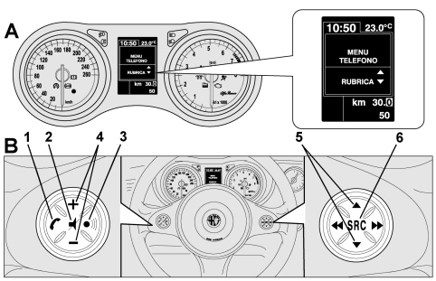

|


|
|
| Service News | ||
|
|
Alfa 159
all versions |
|
|||
| 5570 T 000 AA |
HANDS-FREE SYSTEM WITH VOICE RECOGNITION AND Bluetooth® TECHNOLOGY
Network Information |
|||
The new Alfa 159 is available, on request for certain versions/markets, with a hands-free voice recognition system and Bluetooth® technology.
The hands-free system with voice recognition and Bluetooth® allows dialogue without electrical connections (wireless) between a mobile phone and the hands-free system on the vehicle.
Communication is based on the transmission of short radius radio waves which exchange data and voice at a speed of about 1 MB (Megabyte) per second within an operating radius of about 10 metres. The radio frequency used by devices with Bluetooth® technology is not subjec to any restrictions and is free.
In advance of the Service Manual update, below is the main information relating to the description of the system.
The main components of the C1 version system with Bluetooth® mobile phone management are:
- Bluetooth® electronic control unit (located in the compartment behind the front section of the radio) that includes:
-the Bluetooth® receiver-the voice recognition integrated module including microphone-the Text to Speech integrated module- the microphone (incorporated in the windscreen courtesy light)
- the controls on the steering wheel (B - Fig. 1).
The basic feature of this system is the hands-free function with voice recognition and Bluetooth®.
In effect, with this hands-free system it is possible to make and receive phonecalls using either voice commands or the controls on the steering wheel (B - Fig. 1) in complete safety, freedom and comfort whilst driving and obeying the law.
In order to use the voice commands the voice recognition system does not require any preparation process. In effect, the system is capable of recognizing the voice commands given, irrespective of gender, by the tone of voice and intonation of the person giving the instructions.
A mobile phone with Bluetooth® is required to use the hands-free system.
The hands-free system also offers the possibilty of interacting vocally with the telephone whilst driving even if the mobile phone itself does not possess this feature.
It is also possible to interact manually and visually with a mobile phone using the controls on the steering wheel and the multifunction display in the instrument panel (A - Fig. 1 - DIRECTORY).
For the list of mobile phones that the hands-free system will work with, refer to the "List of compatible mobile phones" paragraph.
To start using the hands-free system with voice recognition, simply register your mobile phone with Bluetooth® in the system.
Registering your mobile phone in the system only has to be done once.
 | whilst registering a new mobile phone, the hands-free system searches in its operating range for a mobile phone with Bluetooth®. When it finds it, it establishes a connection using a Personal Identification Number (PIN). |
Once the mobile phone has been registered, the various functions make it possible to:
-transfer the names in the directory to the hands-free system-make a phonecall using the directory or by pronouncing the telephone number-answering a second incoming phonecall.Either the controls on the steering wheel or the voice recognition system can be used to interact with the hands-free system.
Voice recognition makes it possible to activate all the system functions by pronouncing specific voice commands that are recognized by the system.
When the system recognizes a voice command, it will respond with the appropriate action. Voice recognition is an easy and practical way of using this hands-free system. All the system functions are accessible through the hands-free system Telephone Menu.
With the vehicle stationary, it is possible to navigate the Telephone Menu using either the controls on the steering wheel or voice commands.
With the vehicle moving, it is only possible to interact with the hands-free system using either the controls on the steering wheel or voice commands for the functions relating to the telephone (LAST CALLS and DIRECTORY).
To activate the setting functions whilst driving, on the other hand, only voice commands are available.
Fig. 1 - Display and controls on the steering wheel

|
Button |
Short press (less than 1 second) |
Prolonged press (longer than 1 second) |
|
1 |
- Activation of the hands-free system Telephone Menu Directory |
- Refusal of incoming phonecall |
|
- Confirmation of menu option selected | ||
|
- Accepting of incoming phonecall |
- Ending of phonecall in progress | |
|
- Change from one telephone conversation to another in second call mode (call notification) | ||
|
2 |
- Deactivation of voice recognition | |
|
- Interruption of voice message | ||
|
- Exit from hands-free system Telephone Menu Directory | ||
|
- Exit from a sub menu and return to the previous menu option | ||
|
- Exit from the current selection with memorizing | ||
|
- Deactivation/reactivation of the microphone during a phone conversation | ||
|
- Resetting the volume of the call tone for the incoming phonecall | ||
|
3 |
- Activation of the voice recognition |
- Repetition of the last voice message given |
|
- Interruption of the voice message in order to give a new voice command | ||
|
4 |
- Adjustment of the volume for the phone conversation in progress | |
|
- Adjustment of the volume for a voice announcement | ||
|
5 |
- Sliding between the menu options | |
|
6 |
- Confirmation of menu option selected | |
|
- Switch of the telephone call in progress from the hands-free system to the mobile phone and vice versa |
| For many functions, the controls on the steering wheel (6 and 1) are interchangeable and the preferred button can be selected. For both operating modes for the controls on the steering wheel (short or prolonged press), the function is activated when the button is released. |
The current hands-free system with Bluetooth® technology is compatible with all mobile phones that support Bluetooth® 1.1 and a 1.0 hands-free profile (refer to the Bluetooth® connection specifications in the mobile phone user manual).
As a result of the different possible software versions available on the market for different models of mobile phone, some additional functions (e.g.: second call management, call transfer from hands-free system to mobile phone and vice versa, etc.) may not correspond exactly to the description in the mobile phone user manual.
In any case, the possibility of carrying out a hands-free conversation will not be compromised.
The mobile phones that, at the time this Service News is published, have undergone a thorough check on operation with the current Bluetooth® hands-free system are listed below:
|
Make |
Type |
|
Audiovox |
SMT 5600 (Orange C500) |
|
Motorola |
V525, V600, Mpx 220 |
|
Nokia |
6230, 6600, 6820, 7610 |
|
Sony / Ericsson |
K700i, T610, T637, Z600 |